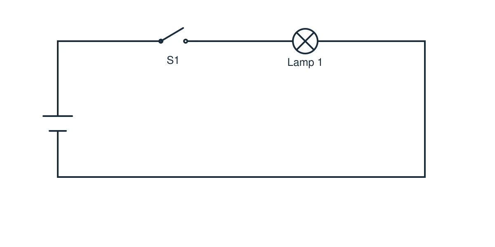

Lesson 08: Parallel lamps
Parallel-circuit practical | 12 V AC
Name: ____________________ Class: __________ Date: __________
1. Do now: Retrieval (5 minutes)
Modify the circuit below by adding a second lamp and a second switch. Each switch should control only its own lamp.

Build and change circuits with the supply disconnected. Ask for a teacher check before testing.
2. Build two independently switched lamps
Use your circuit drawing from Question 1. Ask your teacher to check it before building. Construct the circuit using the separate switches and two 12 V AC lamps. Take turns making and checking connections.
Teacher check: __________ Record the observed lamp states in all four rows.
Switch 1 | Switch 2 | Lamp 1 | Lamp 2 |
Open | Open | ||
Closed | Open | ||
Open | Closed | ||
Closed | Closed |
Does S1 change Lamp 2’s state? __________
Does S2 change Lamp 1’s state? __________
3. Explain your results
One connection-quality check:
____________________________________________________________
____________________________________________________________
Why can one lamp stay on when the other switch is open?
____________________________________________________________
____________________________________________________________
____________________________________________________________
4. Safety: Notes from the closing discussion
A short circuit has very ______ resistance and can allow excessive ______.
MCB protects against:
____________________________________________________________
____________________________________________________________
RCCB protects against:
____________________________________________________________
____________________________________________________________